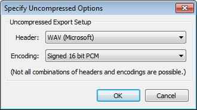

Export Audio
From Audacity Manual
The Export Audio dialog (for export of a single audio file from the whole project) is accessed from . When you use to export a single audio file from a selection, the Export Selected Audio dialog appears. Both these dialogs are identical and let you specify folder location, file name, format and encoding options for your exported file.
You can use to export multiple audio files (based on labels or multiple audio tracks) in one process.
Export Audio or Export Selected Audio dialog
In summary, there are five steps to follow when exporting.
- Choose the folder to export to in Save in: then type the file name you want.
- Select the type of audio file to export to.
- Press the button if you want to change the size, quality or other encoding choices for that selected file format.
- Press .
- The Metadata Editor dialog will then appear (unless you have disabled it for the export step in the Import/Export Preferences). Edit Metadata lets you enter embedded information in the file such as artist, year or genre. Either leave the metadata blank or complete the fields you require, then press (not "Save...").
File name
- File name: Type the required file name. The correct file extension - preceded by a period (dot) - will be added automatically to the end of the file name, according to the format selected in the "Save as type" list (see below). For example, typing "Voodoo Chile" (without quotes) as in the image above will produce a file "Voodoo Chile.mp3". For M4A and WMA formats (for which the optional FFmpeg library is required), you can add alternative extensions as specified in "FFmpeg formats" below.
Any other extensions can be added after a file name as required, but Audacity will display a warning that this isn't the normal extension for this file type, and that some applications might not play files with non-standard extensions.
File type
- Save as type: Clicking in the input box opens a dropdown menu enabling you to chose the file format you wish to export to:
- See: Export Formats supported by Audacity for more details on the various formats that Audacity supports for export.
File format options
- Clicking this button opens another dialog for making settings like quality or encoding for formats with options. As an example, here are the Options dialogs for the Uncompressed and MP3 formats:
 
Cancelling the export process
You may abort the export process without writing the file by pressing in the Export Audio / Export Selected Audio dialog, or in the Advanced Mixing Options or Metadata Editor dialogs (if those dialogs appear). If you Cancel in any dialog, any changes you made to the "Save in:" directory or file type will not be preserved for next time you export.
Export progress dialog
Once you have clicked the button in the export dialog and in Edit Metadata, Audacity will display a dialog displaying progress of writing the exported file:
The colored bar is a visual indicator of how much of the file has been written. The Elapsed Time and Remaining Time are estimates and may change as the export progresses.
Clicking either the or button will halt the export where it is now, leaving the partially exported file in place.